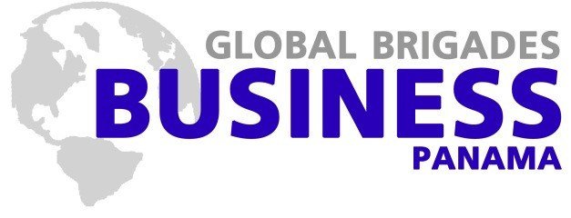

Global Business Brigades
Overview
Global Brigades is an international non-profit that adopts a rural community in Nicaragua, Honduras, Panama or Ghana and sends a variety of brigades for a community to meet their developmental goals. There are nine different brigade programs ranging from business to engineering to medical to implement the necessary infrastructure for a healthy, sustainable economy and society to develop. The brigades range from a week to two weeks in length. The Global Business Brigades (GBB) program specifically focuses on teaching financial literacy to break the cycle of perpetual poverty.
Experience
GBB has without a doubt been one of my most meaningful experiences in college. I had the unique privilege of working with the wonderful Wounaan community in Pueblo Nuevo, Panama at the end of May 2015. I taught financial literacy workshops, as well as consult a small artisan handcraft business on how to develop a more sustainable business model. The workshops were attended mainly by women, as the men would be working during the day. It was inspiring to see their eagerness to learn and gratitude for our work. Many of the women admitted that saving was a novel concept to them; previously, they viewed all income as dispensable, making simple chance events like their child or husband getting sick financially devastating. This program made me realize that financial literacy was a crucial and underserved cause, which led to me joining Capital Community after returning to UT.
Aside from my financial literacy work, I also assisted a small artisan handcraft business that made bracelets and other jewelry using a cultural bead called "Shakras." Despite the fact that their crafts were beautiful, there were some significant issues with the business. All of the members of the community would create these beads, so there was already a major oversupply in the community. The business had also grown dependent on brigades to buy the goods they made, which was obviously not a sustainable or scalable model for obvious reasons. Along with my group of three other brigadiers, we suggested two major changes. Since the crafts were a cultural tradition, we couldn't simply tell them to stop making the products. Instead, we suggested that they start selling the products in Panama City at popular tourist destinations. Considering that transportation was an issue, we found that there was a man that took weekly trips to the city to sell crops and suggested that they coordinate rides with him. After extensive discussions with the group, we discovered that everyone in the community purchased the beads from a man in a nearby village. Since the business would have access to Panama City and one of the members knew bead wholesalers in the city, we also recommended that they start buying beads and reselling them in their community. This way, they had all the beads they needed for production as well as a local revenue stream.
It was amazing to have the opportunity to be immersed in a completely new culture. Working with the community was extraordinarily humbling. Despite living well below the poverty line in a severely underdeveloped community, the community members offered us lunch every day that we worked with them as a way to demonstrate their appreciation for our work. As a native Spanish speaker, I had the unique opportunity to communicate freely with the community, allowing me to develop meaningful relationships with the community members. I also assisted the brigade as a translator whenever necessary. I definitely plan on participating in another brigade before graduating!
